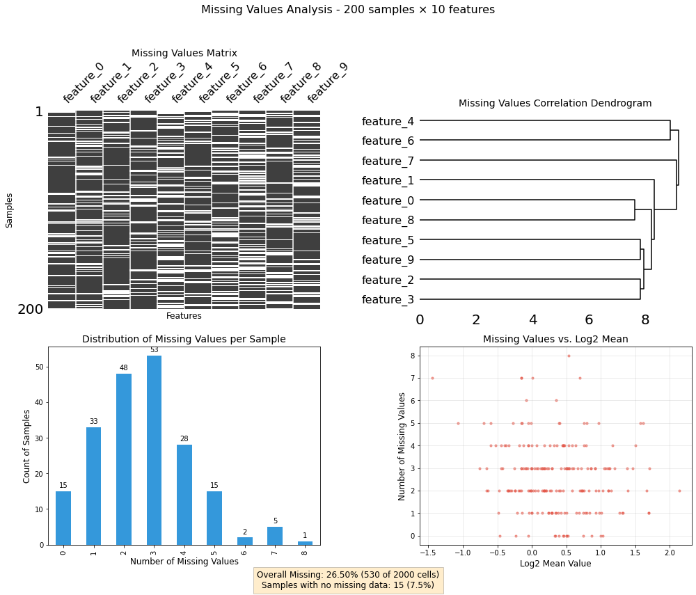

Comprehensive tools for visualizing and analyzing missing data patterns.
Overview This notebook is part of the project_utility package and provides tools for visualizing and analyzing missing data in pandas DataFrames. The tools focus on providing multiple complementary views of missing data patterns to help guide data cleaning and preprocessing. Imports
Missing Values Analysis Class
This class provides a unified interface for visualizing missing data patterns.
A class for visualizing and analyzing missing data in pandas DataFrames.
# Create a DataFrame with missing valuesdef create_sample_df(n_rows=1000, n_cols=50, missing_fraction=0.2, random_seed=42):"""Create a sample DataFrame with controlled missing values.""" np.random.seed(random_seed)# Create a DataFrame with random values df = pd.DataFrame(np.random.lognormal(0, 1, size=(n_rows, n_cols)))# Add column names df.columns = [f'feature_{i}'for i inrange(n_cols)]# Add row names df.index = [f'sample_{i}'for i inrange(n_rows)]# Create patterns of missing values# 1. Completely random missing values mask_random = np.random.random(size=df.shape) < (missing_fraction /2)# 2. Structured missing values - some features have more missing values mask_cols = np.zeros(df.shape, dtype=bool) # Explicitly use boolean dtype cols_with_missing = np.random.choice(n_cols, size=int(n_cols *0.3), replace=False) mask_cols[:, cols_with_missing] = np.random.random(size=(n_rows, len(cols_with_missing))) < missing_fraction# 3. Structured missing values - some samples have more missing values mask_rows = np.zeros(df.shape, dtype=bool) # Explicitly use boolean dtype rows_with_missing = np.random.choice(n_rows, size=int(n_rows *0.2), replace=False) mask_rows[rows_with_missing, :] = np.random.random(size=(len(rows_with_missing), n_cols)) < missing_fraction# 4. Value-dependent missing - higher values more likely to be missing mask_value = (df > df.mean().mean() *1.5) & (np.random.random(size=df.shape) <0.5)# Combine masks combined_mask = mask_random | mask_cols | mask_rows | mask_value# Set values to NaN based on the mask df_with_missing = df.copy() df_with_missing[combined_mask] = np.nanreturn df_with_missing# Create a sample dataframesample_df = create_sample_df(n_rows=200, n_cols=10)# Check the overall missing percentagetotal_missing_pct = sample_df.isna().sum().sum() / sample_df.size *100print(f"Total missing values: {total_missing_pct:.2f}%")
Total missing values: 26.50%
Example Usage
Let’s create some sample data with missing values and demonstrate the utility:
print(1)
1
# Create a missing values analyzermv_analyzer = MissingValuesAnalyzer(sample_df)# Generate the dashboardfig, axes, summary = mv_analyzer.plot_missing_dashboard()

Group-Based MinProb Imputation for Proteomics Data
Overview
This utility implements a specialized imputation strategy for proteomics data that handles missing values in a biologically meaningful way. The approach is based on the MinProb imputation strategy commonly used in proteomics analysis, but with modifications to work on a condition group basis.
Imputation Strategy
The imputation follows these key principles: - Condition-Based Statistics: For each experimental condition group, the algorithm computes distribution statistics by pooling all values across replicates and proteins. - Selective Imputation: Missing values are only imputed when all measurements for a protein within a specific condition group are missing. This approach is ideal for handling proteins that are completely undetected in certain conditions. - Low-Intensity Replacement: Following the MinProb philosophy, missing values are imputed as low-intensity signals, drawn from a normal distribution centered at a low quantile of the observed values.
*Group-based MinProb imputation for proteomics data. First computes quantile distribution statistics for each condition group by merging all values within the condition. Then imputes missing values only for rows where all values in a particular condition are missing by drawing random values from the calculated distribution.
Parameters: df (pd.DataFrame): Input DataFrame in log space (rows: proteins, columns: samples) group_vector (list): Vector indicating group membership of each column quantile (float): Quantile to use as the center for the imputation (default: 0.01) sd_factor (float): Factor to multiply the standard deviation for noise level (default: 0.2) random_state (int, optional): Random seed for reproducibility
Returns: pd.DataFrame: DataFrame with imputed missing values.*
Usage example
# Create a toy DataFrame in log2 spacenp.random.seed(42)data = np.log2(np.random.rand(10, 5) *1e4)df_example = pd.DataFrame(data, columns=[f'Sample{i+1}'for i inrange(5)])# Define condition groups: first 3 columns are group 1, last 2 columns are group 2groups = [1, 1, 1, 2, 2]# Introduce missing values by groups# Make all values in group 1 missing for row 2df_example.iloc[2, 0:3] = np.nan# Make all values in group 2 missing for row 5df_example.iloc[5, 3:5] = np.nanprint("Before imputation:")print(df_example)print("\nGroup vector:", groups)# Apply the imputationimputed_df = group_based_minprob_impute(df_example, groups, random_state=42)print("\nAfter imputation:")print(imputed_df)#selection_normed = group_based_minprob_impute(np.log2(df).copy(), group_vector=[1,1,1,2,2,3,3,4,4,4,5,5,5])